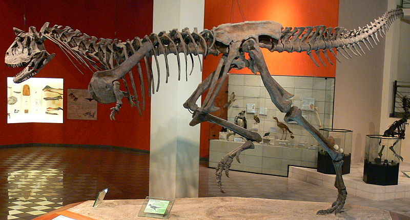

Parque do Museu de Ciências Naturais PUC Minas – Natureza, Educação e Preservação
Localizado no coração de Belo Horizonte, o Parque do Museu de Ciências Naturais da PUC Minas é um refúgio verde que combina pesquisa científica, preservação ambiental e lazer educativo. Com uma área de mata preservada e trilhas ecológicas, o espaço oferece uma experiência enriquecedora para visitantes de todas as idades, conectando ciência e natureza de maneira interativa e envolvente.
O parque abriga uma extensa área de vegetação nativa, composta por espécies típicas do Cerrado e da Mata Atlântica, além de ser lar de diversas aves e pequenos animais silvestres. Suas trilhas ecológicas são um convite para caminhadas tranquilas, proporcionando contato direto com a biodiversidade local. Durante o percurso, é possível observar árvores centenárias, córregos cristalinos e espaços destinados à pesquisa ambiental, tornando o passeio uma verdadeira imersão na natureza.
Além da riqueza natural, o local se integra ao Museu de Ciências Naturais da PUC Minas, um dos mais importantes centros de pesquisa científica do Brasil. O museu é famoso por seu acervo paleontológico, com fósseis impressionantes de animais pré-históricos, incluindo espécies gigantes que habitaram a América do Sul há milhares de anos. Exposições interativas e atividades educativas aproximam os visitantes do fascinante mundo da ciência, despertando a curiosidade e o interesse pela conservação ambiental.
Combinando lazer, aprendizado e preservação, o Parque do Museu de Ciências Naturais da PUC Minas é um espaço único em Belo Horizonte. Seja para explorar trilhas, conhecer mais sobre a fauna e a flora ou se encantar com descobertas científicas, o local oferece uma experiência enriquecedora e inesquecível para toda a família.
